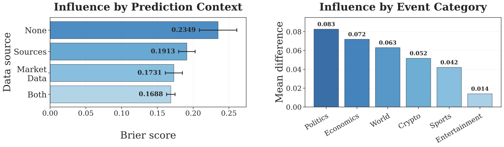
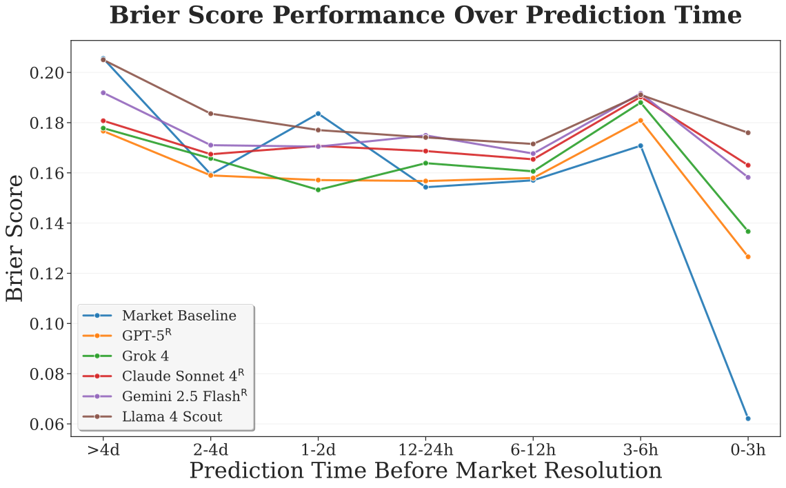

Core Question
Can AI systems reliably predict the future by connecting the dots across existing real-world information?
Verifiable. Uncheatable. Challenging.
- Verifiable. Outcomes resolve in the real world — no judge, no rubric gaming.
- Uncheatable. Future events cannot leak into training corpora.
- Challenging. Requires synthesizing news, reasoning under uncertainty, and calibrating beliefs.
What we built
- 01 We built Prophet Arena, a live & extensible benchmark that continuously collects real-world forecasting tasks across domains and evaluates base LLMs and agentic systems on their predictive intelligence.
- 02 We incorporate multiple scoring metrics capturing statistical accuracy, calibration, and the economic value of probabilistic forecasts.
- 03 We introduce the notion of LLM-as-a-Prophet and are actively building a full AI-forecasting ecosystem — forecasting data, environments, and agents.
Our Ecosystem
Event / Market Extraction
- Sports 25%
- Politics 25%
- Entertainment 25%
- Others 25%
Prediction Context Construction
Self-directed Context
Probabilistic
Prediction
Evaluation
13 models, 7 agents, 3,800+ events
| System | Brier ↓ | ECE ↓ | Return ↑ |
|---|---|---|---|
| BaselineMarket (human) | 0.1494 | 0.0799 | 100.00% |
| Best AgentGemini 3 Agent | 0.0718 | 0.0217 | 89.67% |
| Best LLMClaude Opus 4.5 | 0.0858 | 0.0350 | 85.10% |
| Best OSS LLMDeepseek V3.2 | 0.1032 | 0.0380 | 81.37% |
Agents beat base LLMs on both accuracy and calibration — but no system yet matches the human market baseline on return. The gap is narrowing; calibration remains the frontier.
Diverse Metrics
For a forecast event with binary markets j ∈ {1,…,mi}, predicted probability pij, resolved as oij ∈ {0,1}.
M1 Brier Score accuracy
M2 Calibration Error calibration
M3 Market Return economic value
Fixed-betting strategy: compare model probability pij to market price qij, wager $1 on the market with the largest edge pij/qij, and average payoff against oij.
Key Observations
- 1 Market Data. Including (human) prediction market data into the context helps improve prediction accuracy.
- 2 Short-term (In)accuracy. Models struggle to match market accuracy close to resolution time.
- 3 Where can models improve? Source finding and evidence extraction — pulling the most relevant information from the available sources.


Beyond the benchmark
Forecasting as a New Frontier of Intelligence
Submit via OpenReview · poster + oral tracks · best-paper award.
Prophet Hacks · 30-hour build
Build an AI forecasting agent, then benchmark it live on Prophet Arena. Two starter kits to fork:
AI-Prophet SDK
A complete suite for building forecasting and trading agents — plug into Prophet Arena with a few lines.
- LLM provider connectors
- MCP-powered news retrieval
- Structured forecasts & trades
- Plug-and-play agent templates
- Native Prophet Arena sync
Compare with Prior Benchmarks
Prophet Arena is the only forecasting benchmark that simultaneously supports live events, probabilistic outputs, multi-horizon tasks, a modular agent stack, and return-based economic metrics.
| Benchmark | Live events |
Proba- bilistic |
Multi- horizon |
Modu- larized |
Return metrics |
|---|---|---|---|---|---|
| MIRAI | — | — | ✓ | — | — |
| ForecastBench | ✓ | ✓ | ✓ | — | — |
| FutureBench | ✓ | — | — | — | — |
| Prophet Arena | ✓ | ✓ | ✓ | ✓ | ✓ |
Further Questions
- Q1 How do we build a stronger forecasting agent? Tool access Agentic pipelines Fine-tuned models Prompt engineering
- Q2 How do we design better betting frameworks to optimally convert forecasts into profits?